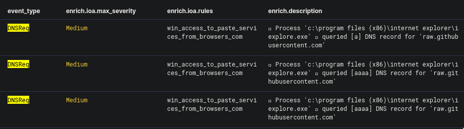

Cyber Corp Case 2 Writeup - Part 2
The second case of the CyberCorp challenge on CyberDefenders.org is all about threat hunting. Created by @BlackMatter23 and his team, this challenge is based on a real-world attack so it is perfect for gaining practical experience in threat hunting.
This writeup is part 2 out of multiple parts. You could read Part 1 here and Part 3 here.
Checking DNS Requests
Question 6. Specify the domain name of the resource from which the files mentioned in question 5 were supposedly downloaded as a result of malicious code execution.
This one is easy. Using the same date range from the previous question, I changed the query to event_type:DNSReq (where "DNSReq" is short for "DNS Requests").

We could easily see a DNS record being queried, which is our answer to this question.
Finding the encoded executable code
Question 7. The first file downloaded (as a result of executing the code …